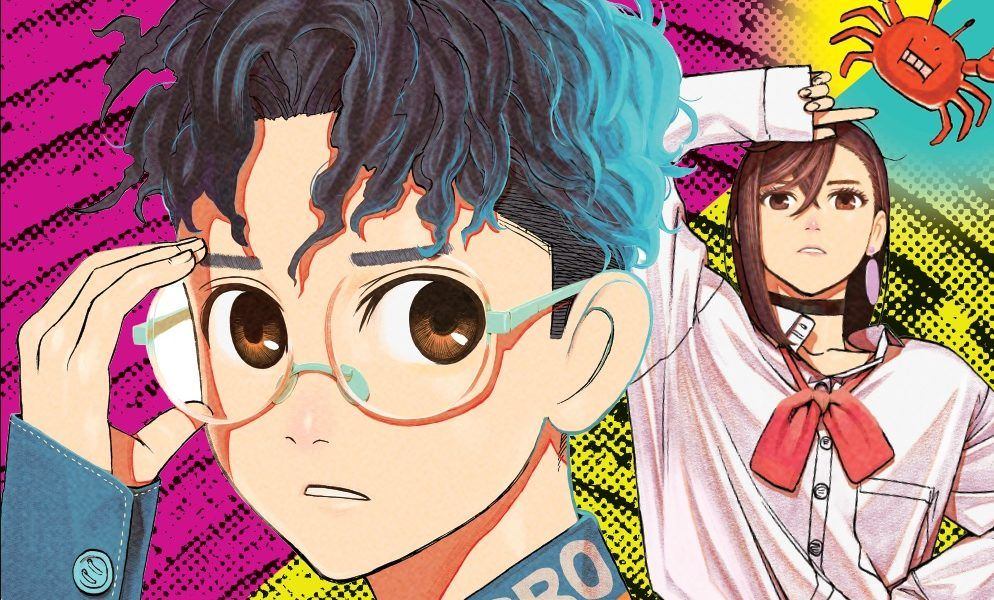

Últimas Noticias
Anime
The Mononoke Lecture Logs of Chuzenji-sensei: He Just Solves All the Mysteries
Esta nueva serie derivada de The Summer of the Ubume promete traer más misterios e intriga cuando se estrene en 2025.
Por Malena Guanziroli - 03/10/2024

Anime
Dan Da Dan: El Anime de Paranormal y Romance que Estremecerá el Otoño
Este anime sigue a Momo y Okarun enfrentando criaturas paranormales y desatando poderes ocultos.
Por GamerFocus - Octubre 2024Anime
Re:Zero Tercera Temporada, Parte 1 Llega a su Clímax
La tercera temporada de Re:Zero sigue su intensa narrativa de mundos paralelos y sacrificios heroicos.
Por Crunchyroll - Octubre 2024Anime
Trillion Game: Amistad y Ambición en un Viaje Empresarial sin Límites
Haru y Manabu luchan por crear un imperio de un billón de dólares en esta adaptación que mezcla tecnología y comedia.
Por GamerFocus - Octubre 2024
Anime
365 Days to the Wedding: Una Falsa Relación que Podría Cambiarlo Todo
Takuya y Rika deben fingir un compromiso para evitar ser trasladados a Siberia en este slice of life.
Por GamerFocus - Octubre 2024Anime
Acro Trip: Una Otaku Obsesionada con una Chica Mágica Desata el Caos
Chizuko Date decide arrojar luz sobre las batallas de su heroína, pero descubre un mundo más oscuro del esperado.
Por GamerFocus - Octubre 2024